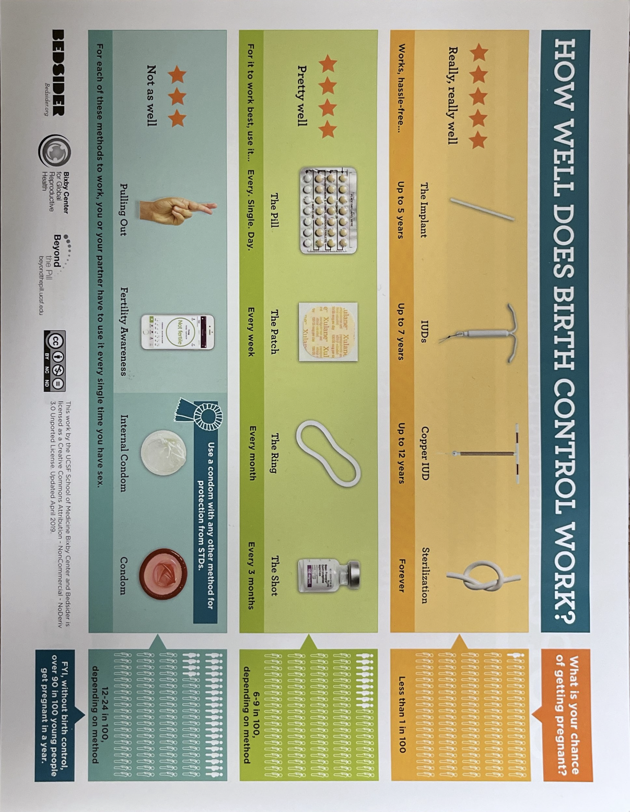
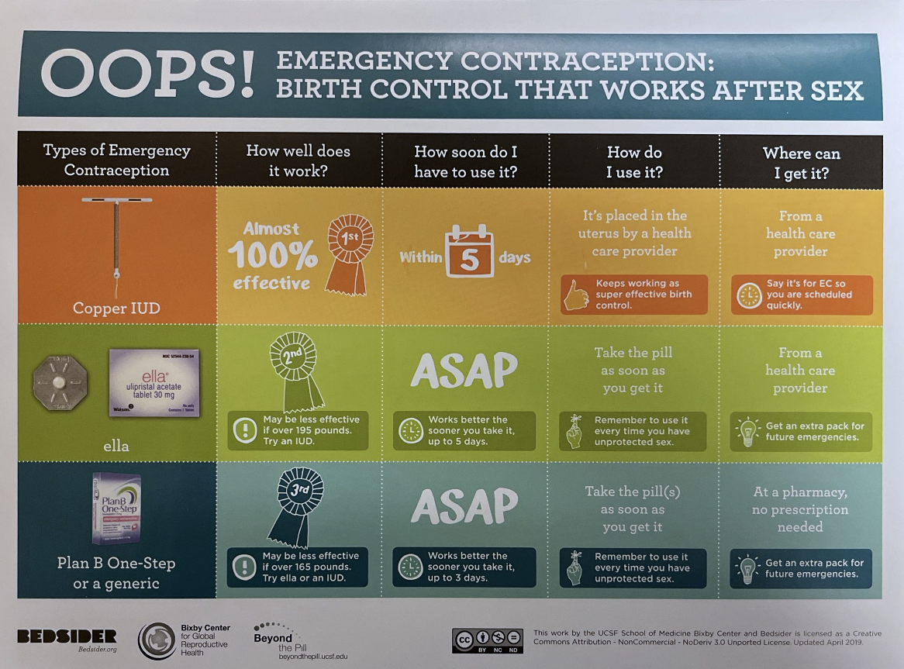

Women’s Health/Sexual Health
Contraception
- Family medicine and OB/GYN providers onsite can provide a variety of contraception prescriptions and devices, including OCPs, vaginal ring, Nexplanon, and IUDs. There is a contraception chart in the workroom that is useful for guiding patients through these conversations.
- OPill, the over-the-counter birth control pill, is also available in the workroom to give to interested patients as appropriate
- Condoms are also available for free at the clinic to give out to patients


In-house OB/GYN
- Gynecology is available on select days to see patients and perform in-office procedures
- Pediatric gynecology is available to address specialized concerns (eg. imperforate hymen)
Initial OB visit
- If a patient tests positive for pregnancy in clinic, you should schedule them for an OB intake with a nurse. They should also be scheduled for imaging for dating purposes.
- Prenatal vitamins are located in the medication closet. See the MAs for access to the room code.
Sexual Health
- STI screening is a common reason for many of our visits. The following are common orders you may place for this purpose:
- CT + NG + TV, DNA, urine/swab
- Bacterial vaginosis + vaginitis panel, vaginal
- HIV (1+2) Ab screen, serum
- RPR, serum
- Hepatitis (A+B+C) panel, serum
- Pregnancy test (urine or serum)
- Many STIs, including HIV, gonorrhea, and chlamydia, are reportable diseases. You should always discuss the notification of partners with the patient in clinic. If the patient is uncomfortable with informing their partner(s) and would like help doing so, the Washtenaw County Health Department can assist. They will call the partners to inform them about exposure and provide recommendations about testing/treatment without giving out any confidential information about the patient.
- Note that the WCHD is alerted about positive results automatically through the lab. There is also a process to notify the health department directly if needed.
- We also provided post exposure prophylaxis (PEP) for patients and patterns as appropriate. There are often commonly used medications such as doxycycline and metronidazole available in the medication closet.
- If a medication is not available, GoodRx is a good resource to find compare prices across pharmacies and find discounted prescriptions
In addition to standard testing, remember to educate patients engaging in risky sexual activity about PrEP for HIV prevention. There is a handout packet in the workroom that can be shared with the patient. Review the image below to refresh on information about PrEP to share with patients.